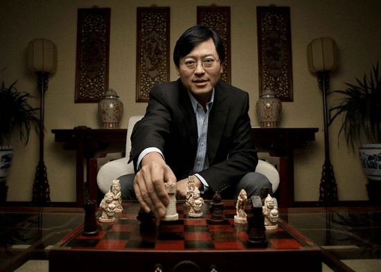
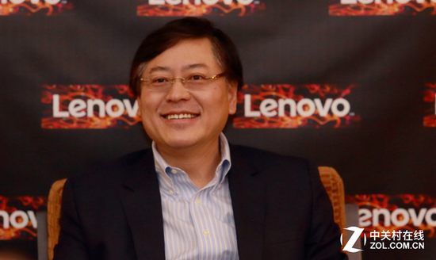
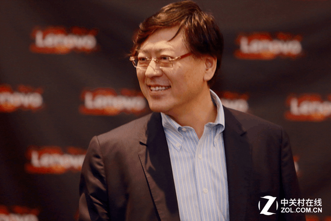

CES 2017联想给我们展示了PC产品、手机产品以及最新的智能家居系列产品，我们看到联想的业务日渐丰富的同时，战略也是愈发清晰、完整，显现出了国际大厂的风范和创造力。会后联想集团董事长兼CEO杨元庆与我们分享了联想的未来的“三波战略”和业务发展方向。

智能互联网新业态 CES2017访联想杨元庆
·智能互联网时代——联想要做推动者和赋能者
第一波：PC业务
虽然联想已经是全球领先的NO.1，在这个领域也要落实我们的战略，我们未来的愿景和战略是设备+云，PC也是设备的一种，也是PC+云。我们会一如既往的不断革新、创新，CES2017联想依然有很多PC的产品在发布。
我们就围绕着用户需求去做创新，大家可以看到像联想推出的小新，在海外的小新就叫“新世代”。这样子的产品都是像把LTE解决方案、MVNO（懂的通信）的解决方案都放在里面，还有是加强了对电脑的管理、服务，这些方面推出了电脑管家。在这些方面都可以看到是我们在个人电脑领域里面的一个进步，做到了不同产品直接的连接，用户在使用的更加方便、实用。
第二波：联想构建新的增长引擎和利润引擎
联想集团董事长兼CEO杨元庆表示：“要让一个业务成为既增长、又获利的业务，不是一蹴而就的，都是经过投资、投入，建立关键核心竞争力的阶段。这两个业务就是刚才讲到的智能手机移动业务和现在的数据中心业务，这两个业务大概都是属于新构筑的增长引擎，也还需要一段时间才能够真正成为既可以盈利，也可以增长的业务。虽然我们做了两次大的并购，但是并购本身并不能保证我们立即就有增长，也不能够保证我们马上得到核心竞争力，或者马上就可以借用。我们必须把并购的业务彻底消化，才能够把过去是别人的核心竞争力，变成是我们自己的核心竞争力。”

智能互联网新业态 CES2017访联想杨元庆
关于智能手机市场杨元庆认为有两个完全不同的战场，一个是成熟市场的战场，一个是新兴市场的战场。成熟市场的“游戏”是高端产品、创新性产品，必须专注在这样的领域里面，必须有品牌，是高端创新产品加上品牌的一个“游戏”。在新兴市场的话是一个规模加上效率的游戏，你要追求规模又要赚钱的话，必须要有一定的效率。正是因为这样的判断，我对联想做手机还是非常有信心。在全球范围内来看，能够同时在两个战场上面作战并且具有优势的话，大概这样的厂商不多，但是联想是少有的几家之一。在我们并购摩托罗拉的移动业务、手机业务之后，实际上我们是具有相当的能力，在包括美国、欧洲甚至将来在日本、澳大利亚的一些成熟市场去作战。不但是是因为有品牌，而且有创新。
联想作为一个中国企业，在中国的品牌里面我们也是少有的自己做生产制造、自己做运营的公司，这对于保障效率、提高成本竞争力的方面肯定是有信心。
第三波：未来是一个万物智能、万物互联的时代
越来越多的不同种类的智能终端、智能设备会出现，虽然这些智能终端和智能设备就不一定是像PC、手机的形态了，就是五花八门了。但是有两点是必然的，第一点是将会更加智能、更多的是由人工智能来赋能的。第二点是每个设备后面都跟着云，或者是多个云服务、云内容、云应用，或者是一个特定的云服务、云应用或云内容。
正是基于这样的考量，像我们最近围绕着智能家居、智能办公做了很多工作。在这一次CES展上面，大家可以看到我们在智能家居方面推出的智能音箱、智能存储、智能电视等等，这些都是为了实现未来智能家居的必要元素。比如说智能音箱不是为了给你一个音箱，是为了给你后面提供信息服务、电商服务、音乐服务等等。当然像智能电视更多是像影像服务方面的东西。
·是金子总会发光——订制新战略 开发新的业务
关于联想这两年的发展杨元庆表示：因为任何一个企业都是螺旋式上升，没有直线上升的企业，靠着一个战略、一个业务或现有的业务、现有的战略就可以一直成长。企业一定是经过一段时间以后，要制订新的战略，开发新的业务。在这个过程中必定是要经过一定的徘徊、盘旋，这样的企业才能够获得新的增长动力。对于联想来说，大概就是这样。
联想已经三十年了，这三十年的历程简单分段落的话，最早我们就是一家做代理的公司，给IBM、惠普来做，靠这个积累了一定的销售能力、市场能力、财务能力。
之后在自有品牌电脑方面，联想大概是在1984年到1990年开始。1990年到2003年，这十几年的时间其实我们就是把电脑在中国做得非常成功，但是又遇到天花板了，我们就拓展了海外的市场。在2000年到2003年的时候，我们有不同的战略，那时候希望在中国多元化发展。其实是调整了这个战略专注在PC、专注在设备上面，但是向全球发展做全球化。从2009年开始，在完全消化以后变成了联想的核心竞争力，变成了联想的能量之后，我们开始高速发展，一直到最近的这些年在PC开始下降之前，我们这颗星都是挺闪亮的。
这一次其实对联想是一个更大的挑战，因为从单一业务跨越成为一个多业务的平台，所以这对于一个公司来说是一个大的挑战。我说得联想是换“操作系统”，过去是单任务的操作系统，现在要变成多任务的操作系统，所以这是非同小可的事情。但是一旦最后成功落实到位的话，联想的未来一定是可以期待的。现在大多数的员工都在相信，我们正在扎扎实实地构筑联想的未来。

智能互联网新业态 CES2017访联想杨元庆
在这样子的大的“操作系统”平台下面，难的不是品牌的建设，而是自己内部的管理系统、运营系统的重构，是用什么样的组织，用什么样的流程，用什么样的考核激励的办法来针对不同的业务，针对在发展不同阶段的业务。对联想当前的重要性是不同程度的业务，我们用什么样不同的组织、不同的流程、不同的考核和激励方式来做，这是我所讲的“操作系统”的内涵。
现在联想在内部有一个“3×3”的说法，就是我们把业务装到9个格子里面去。这9个格子横坐标就是战略的重要性，从核心的到增长的再到次重要。下一个发展阶段，就是投入期、盈利性增长期还是盈利贡献期。针对不同的业务我们怎么来进行管理，这也是我们在最近这些年投入精力比较大的课题，就是研究这个“操作系统”，而不是业务本身。对于不同的业务你怎么去进行分门别类的管理，所以这大概是我们投入精力比较大的地方。
当然品牌也是要重新打造的，从过去单一业务的品牌打造成多业务的品牌。这里面尤其难的就是联想现在业务涵盖太广，非常广。从消费到企业级，怎么样让消费者感觉到我们的青春活力，同时又让企业的用户感受到我们的沉稳和可以信赖，所以在这些方面其实都是给我们提出了很多挑战性的难题。但是我相信联想是有足够的能力去应对这些挑战，拿出好的解决方案和结果的。
- 推荐图文
- 推荐人物
- 推荐企业